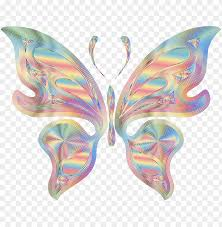

This Is My Poem Corner

Maybe
Maybe the world will heal again before I will depart
Maybe love can heal our wounds, if only we let it play a part
Maybe the lesson I need to learn will not be hard to see,
if only I open myself up to the possibility
Maybe life is just a dream and I’ve been sleeping too long
Maybe when I wake this time it’s to a brand new song
Maybe all of this is bullshit just to ease my soul
but maybe just maybe
it's a message
That’s been to me unfold
A story of love
We are the women whose blood runs through the veins of the misunderstood, misdiagnosed and all those mis-aligned by this injustice system.
those of us who have figured out that we have in some form or fashion or reason being.
missed the boat some how and in some way or missed out on the best of our lives or something in our lives -
only to have found a pathway to healing and redemption with our sisters in a ,
dissolute, desolate, dark, and barren place, devoid of compassion, that we have transformed
We fermented our hurts into a beautiful garden filled with the light we've shown upon one another to nurture and heal, to run our fingers over all the scars
and----
we found beauty and strength in one another. In our stories - in our lives
We found honor and loyalty ,
we found courage and dignity,
we found each other and watered , pruned, and shifted the dirt from time to time
so that our seeds could blossom and stretch towards the light as we grow
tall and strong and give birth to a collective
that gives birth to ideas
that gives birth to movements
that give birth to the causes of who we are
and what we understand to be truth -
women
women on the move,
women changing the narrative ,
women challenging the status quo ,
changing our lives with other women
and the lives of everyone we touch
as we love on one another ,
so we can love one another ,
till we can all love one another
and, keep loving one another.
This is A story of LOVE!!!!
United souls sisters
We are a fierce collection of women , as diverse as a bag of party mix, so unapologetic for who we are and so brave and powerful for what we believe. I acknowledge each and everyone of you for the riches you have brought into my life, your wisdom and strengths that you so unselfishly share with me. You are beautiful bodacious creators of prose and poetry that ebbs and flows from your minds onto paper into the words that bond us on this wonderful writing adventure. I thank you , I appreciate you , I love you!!! United Soul Sisters-